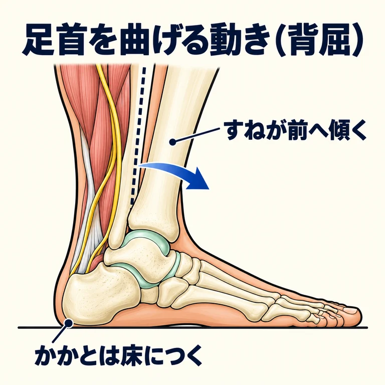
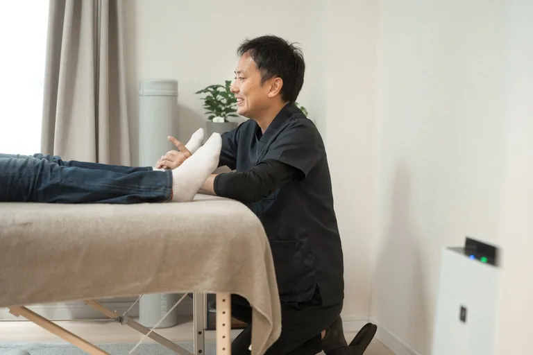

膝と足首の状態を確認する
診察では、痛む場所、動く範囲、腫れなどを見ます。画像検査などが必要かどうかは、医師が判断します。
足首を動かしにくく、膝の痛みも気になる方へ。両方の状態を確認し、できる動きから考えます。
しゃがむと、かかとが浮く。階段を下りるとき、足首と膝が動かしにくい。足首の動きも確認しますが、それだけで膝痛の原因を決めることはありません。
膝や足首の強い腫れ、赤み・熱感、発熱、体重をかけられない痛みがある場合は、速やかに医療機関へ相談してください。片脚が急に腫れる、息苦しさを伴う場合も、整体の予約を待たず受診してください。
足首の硬さは、単独の病名ではなく、動かしにくさの表現です。足首を曲げる「背屈」は、足を床につけた状態では、すねが足の上を前へ傾く動きに当たります。
歩行やしゃがみでは、足首・膝・股関節が一緒に動きます。足首の動きが少ない人で、しゃがむときの膝や足首の動き方が違うことは研究されています。ただし、足首の硬さがその方の膝痛の原因だと証明するものではありません。

足首の動かしにくさが、筋肉の張りなのか、関節の状態や痛みに関わるものなのかは、感覚だけでは判断できません。つまる感じ、腫れ、左右差、症状の経過も確認します。
膝にも独自の病態がある場合があります。足首を柔らかくすればすべて解決すると考えず、必要な受診と、実際の動作の確認を合わせて進めます。
足首の動きを確認することと、膝の病気を治療することを分けます。痛みや腫れが続く場合は、整形外科で両方の状態を相談しましょう。
診察では、痛む場所、動く範囲、腫れなどを見ます。画像検査などが必要かどうかは、医師が判断します。
状態に合う関節の運動や、身体を支える練習を行います。前側が強くつまるのに押し込み続ける、痛みを我慢して伸ばす、といった方法は一律に勧めません。
関節の病気などがある場合は、その治療方針を優先します。必要に応じて薬や装具などを検討し、日常の活動も状態に合わせて調整します。
当院では足首の動きに加え、膝・股関節と全身の動作も確認します。足首の硬さを取れば膝痛が必ず改善する、という案内はしていません。
当院では、筋膜リリースと運動療法を組み合わせた「MSMメソッド」で施術を進めます。
使いすぎている筋肉を「過労筋」、うまく使えていない筋肉を「サボり筋」と呼び、両方の働きを見ていきます。
Mobility｜緩める
使いすぎている筋肉を緩め、身体を動かしやすい状態を目指します。
Stability｜単体の筋肉を使う
うまく使えていない筋肉を意識し、力の入れ方を練習します。
Movement｜動作につなげる
筋肉を使う練習から、日常生活で必要な動作へつなげていきます。
施術と運動に加え、認知行動療法の考え方を取り入れ、痛みへの理解や、動くことへの不安にも向き合います。今の身体でできることを一緒に考え、取り組む内容は状態に合わせて調整します。
目指すのは、ご自身の身体を理解し、自分でケアを続けていけること。卒業に向けてお手伝いします。
足首のどこが動かしにくいか、階段やしゃがみで膝にどんな症状が出るかを伺います。腫れ、つまる感じ、左右差、医師の説明も教えてください。
写真のように足を支えて足首の動きを確認し、立つ・歩く・しゃがむ動作は、できる範囲で見ます。無理なストレッチや深いしゃがみを繰り返してから来る必要はありません。

医療機関での説明や、生活で困っている場面を教えてください。当院で取り組める内容をご案内します。
通院頻度は、症状の強さや続いている期間、生活環境、目指す状態によって異なります。
初回に身体の状態を確認したうえで、必要な頻度と期間の目安をご説明します。ご希望や生活状況も含めてご相談ください。
写真は左右にスライドできます


初回カウンセリング＋全身整体コース
カウンセリング・状態確認込み。まずは相談だけでも大丈夫です。
膝や足首のつらさを一緒に整理し、動きやすい身体づくりをサポートします。
LINEからご希望日時を送ってください。空き状況を確認して、こちらから返信いたします。
【受付時間】9:00〜19:00 【定休日】日曜
施術中は電話に出られないことがあります。後ほど折り返しお電話いたします。
| 時間 | 月 | 火 | 水 | 木 | 金 | 土 | 日 |
|---|---|---|---|---|---|---|---|
| 9:00〜19:00 | ● | ● | ● | ● | ● | ● | - |
完全予約制／定休日：日曜
詳しい道順・建物入口・駐車場については、アクセスページでご確認いただけます。
最後に、ご相談はこちらから
メールフォームからお名前・お悩み・ご希望日時をお送りください。確認後、折り返しご連絡いたします。
送信が完了しました。
アクセスを確認する資料確認日：2026年10月11日
運営・施術担当：川上卓哉（柔道整復師〈国家資格〉）。代表の経歴・資格を見る
一般的な情報提供であり、診断を目的とするものではありません。症状・状態は一人ひとり異なり、医療機関での評価と治療方針を優先します。